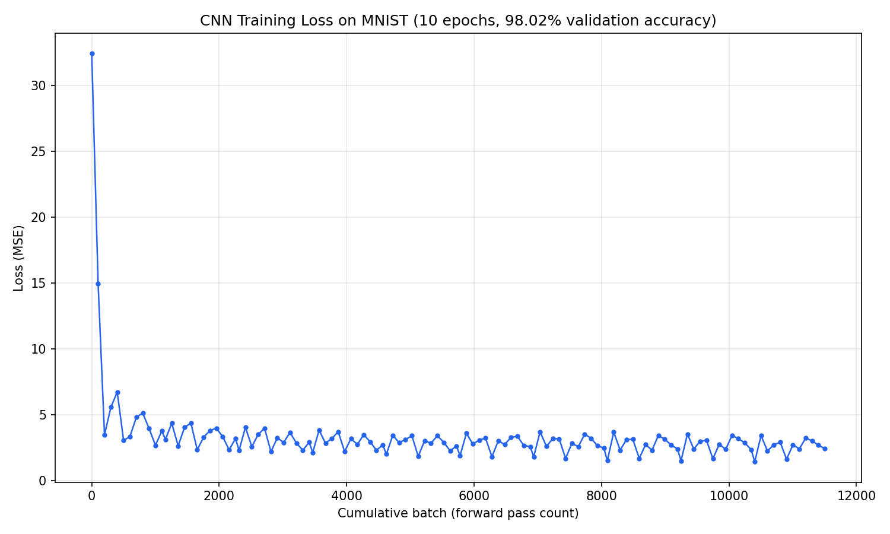

Keon E
Honours Mathematics Co-op student at the University of Waterloo, interested in machine learning and applied mathematics.
Projects
A tensor library and automatic differentiation engine built from scratch in C++, with no ML libraries. It started as a scalar autograd engine and grew into a full N-dimensional tensor engine with broadcasting, matrix multiplication, and 2D convolution. I used it to train two neural networks on MNIST handwritten digits.
Results
| Model | Architecture | Accuracy |
|---|---|---|
| MLP | 784 → 128 → 64 → 10 | 97.34% |
| CNN | 2 conv layers + maxpool + MLP | 98.02% |

How it works
- Tensors of any rank, with broadcasting
- Reverse-mode autodiff using a topological sort of the computation graph
- Every operation has a hand-derived forward and backward pass
- All operations share the same stride-based indexing pattern, so adding a new dimension like a batch or channel axis only means extending the offset formula
Problems I solved
Applying ReLU to the final layer caused an output neuron to get stuck at zero with zero gradient, so the loss stopped improving. I removed ReLU from the output layer so it could produce meaningful scores.
Initializing weights in a range of [-1,1] made activations grow with each layer, and the loss blew up from 106 to 10245. Scaling the range by 1/√n kept activations stable at any width.
A full CNN run ran out of memory, so I switched to shared_ptr. The leak came back, because each tensor's backward function held a reference to the tensor itself. I tracked it down by testing each layer in isolation, and fixed it with a non-owning pointer.
Experience
WATcloud
Team member on Waterloo's student-run compute cluster.
City of Ottawa
Wading Pool Supervisor (2025), promoted after two summers as a Pool Attendant.
Education
University of Waterloo
Honours Mathematics, Co-operative Program
Outside of Code
When I'm not coding, I'm usually doing something active. In high school, I played on the varsity basketball team and ran track and field, and I enjoy nearly every sport. I love the feeling of competition and being part of a team, and I feel that sports are integral to who I am. I also played clarinet and piano in the symphonic band for four years. Music is a big part of my life, and it was one of my favourite parts of high school. I enjoy video games, chess, poker, and strategy games in general. I am often drawn to fast-paced and competitive domains, where learning is involved.